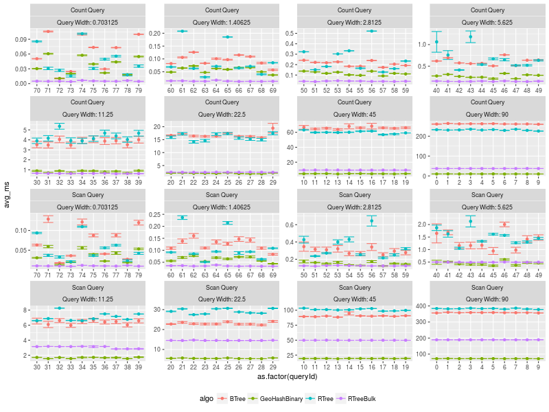

Benchmark Queries
Table of Contents
1 Description export
Test the queries on uniform data. And compare the folling performances.
Use 10**8 elements.
- PMQ / GEOHASH
- BTREE
- RTREE - quadratic algorithm
- RTREE - quadratic algorithm with bulk loading
Use the refinement level = 8
2 Analisys
2.1 Results
2.1.1 Plot overview export

2.1.2 Conclusions export
- PMQ shows its best benefits on large range queries
- for very small queries we are similar to othe Btree an Rtree
- Bulk loading on Rtree only work on static case. The partitionning is optimized when all the queries are loaded together.
2.2 What is the actual count of elements per query ?:
2.2.1 Table export
There are some queries where the count differs for Rtree by a small amout of elements Counts have some differences : Cases where the Count doesn't match exactly.
| queryId | BTree_Count | GeoHashBinary_Count | RTreeBulk_Count | RTree_Count | Var |
|---|---|---|---|---|---|
| 1 | 13238671 | 13238671 | 13238674 | 13238672 | 2 |
| 2 | 13232631 | 13232631 | 13232632 | 13232632 | 0.333 |
| 3 | 13236197 | 13236197 | 13236199 | 13236199 | 1.333 |
| 5 | 13234142 | 13234142 | 13234143 | 13234143 | 0.333 |
| 6 | 13236459 | 13236459 | 13236459 | 13236456 | 2.25 |
| 7 | 13237088 | 13237088 | 13237091 | 13237091 | 3 |
| 8 | 13237620 | 13237620 | 13237620 | 13237617 | 2.25 |
| 11 | 3307714 | 3307714 | 3307716 | 3307716 | 1.333 |
| 14 | 3311510 | 3311510 | 3311512 | 3311512 | 1.333 |
| 15 | 3307750 | 3307750 | 3307751 | 3307749 | 0.667 |
| 16 | 3306478 | 3306478 | 3306479 | 3306480 | 0.917 |
| 20 | 827282 | 827282 | 827283 | 827283 | 0.333 |
| 23 | 826550 | 826550 | 826550 | 826549 | 0.25 |
| 26 | 826961 | 826961 | 826961 | 826960 | 0.25 |
| 27 | 826865 | 826865 | 826866 | 826866 | 0.333 |
| 30 | 206006 | 206006 | 206006 | 206005 | 0.25 |
| 33 | 206557 | 206557 | 206558 | 206558 | 0.333 |
| 41 | 51758 | 51758 | 51759 | 51759 | 0.333 |
| 42 | 51959 | 51959 | 51960 | 51960 | 0.333 |
| 56 | 12961 | 12961 | 12962 | 12962 | 0.333 |